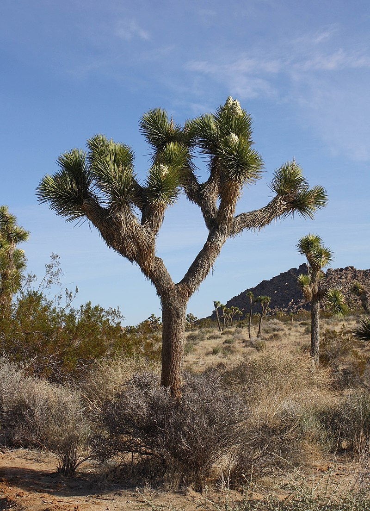

Joshua Tree National Park is a unique desert destination located in Southern California. It is known for its otherworldly landscape, filled with rugged rock formations, vast stretches of desert, and the iconic Joshua trees that dot the landscape.
The park offers a variety of outdoor activities for visitors to enjoy. Explore the numerous hiking trails that lead you through stunning desert scenery and allow you to discover hidden oases, ancient rock art, and panoramic views. Don't miss the opportunity to witness a breathtaking sunset or stargaze under the clear desert skies, as the park is renowned for its dark sky qualities.
Joshua Tree National Park is a haven for rock climbers, with its unique rock formations providing excellent opportunities for bouldering and traditional climbing. The park also attracts photographers, nature lovers, and those seeking solitude and tranquility in the desert environment.
Plan your visit to Joshua Tree National Park and immerse yourself in the beauty and serenity of this desert oasis. Whether you're a seasoned desert explorer or a first-time visitor, the unique landscapes of Joshua Tree are sure to captivate and inspire.